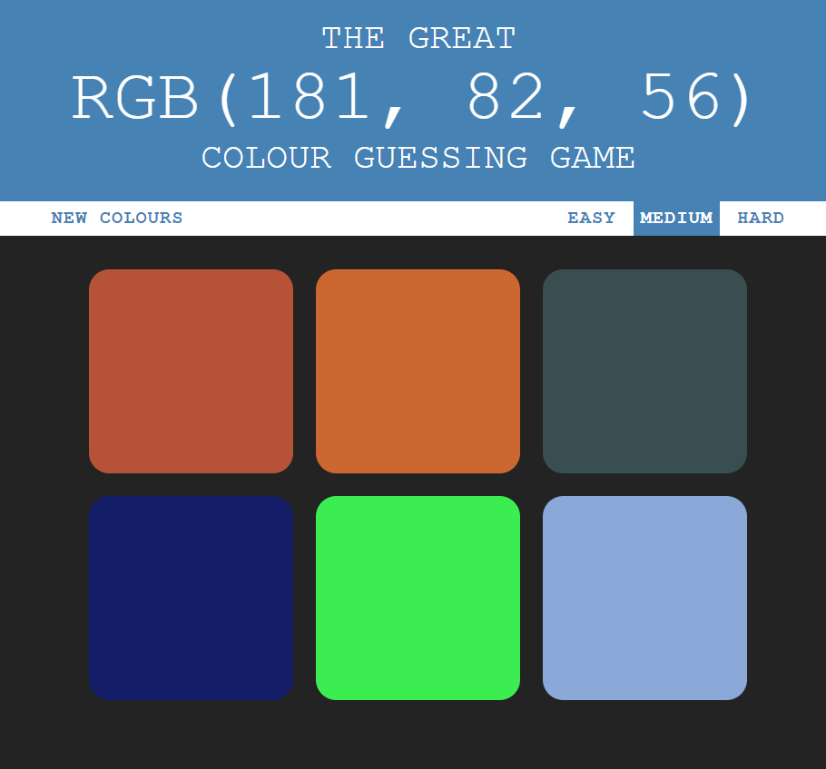

RGB Colour Guessing Game
This game is an application built on HTML, CSS and vanilla Javascript. Upon loading the game, the application randomly generates a set number of colours and chooses one for the player to guess. The three game modes change the number of options that the player is given, which in turn affects the likelihood that the game will produce similar colours in the same range as the assigned guess colour.
Click here to see the live application, and click here to see the code repository.